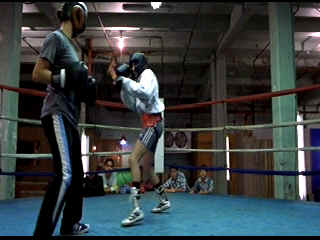
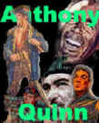

| Girlfight
(SE)/A,B+ |
| Columbia/2000/110/ANA 1.85 |
Girlfight wins every round. First time feature director Karyn Kusama displays amazing poise behind the
camera and in the editing room. The timing of the film is nothing shy of perfect. Fight
sequences are dynamic and the training never appears hackneyed, a major achievement in itself.
The script, also by Kusama, is polished. This is the terrific story of Diana
Guzman, a tough troubled ghetto girl who finds that prize fighting just may be the outlet to release her
frustrations in a positive way. Besides the boxing, difficult family issues are dealt with in an
intelligent fashion and a lovely romance evolves. Perhaps some elements are over-simplified, but
Kusama shows the superb balance of a ring master in staying on her toes throughout the production.
 |
| Lots of snap to every punch.
©Columbia |
The cinematography is excellent. Kusama makes intelligent choices throughout.
The dexterous camera of Patrick Cady captures the fisticuffs with equal focus on footwork and punching.
Kusama's insightful filmmaking includes intuitive casting. Newcomer
Michelle Rodriguez is wonderful as Diana. Not only does Rodriguez look like she can pack a punch,
she manages a fine range of emotion beyond left hooks and straight jabs. Jamie Tirelli gives a
convincing performance as trainer Hector and Paul Calderon presents Diana's father Sandro with
moody and unpredictable strokes. All
Hail Kusama!
Girlfight is another excellent
transfer from Columbia. I found no fault in any aspect of the presentation. The image is
consistently sharp, motion stable. Shadow detail is revealing and balanced. Blacks are very good.
Color is accurate and nicely saturated. Theodore Shapiro's music is delivered with snappy pulses in
the Dolby Digital 5:1 presentation. The nice surround stage adds to the dramatic impact of the
images.
Kusama's scene specific audio commentary
and a making of featurette complete the special edition treatment.
|
|
|
|


A larger than life screen
presence brought joy to audiences for six decades. Anthony Quinn had a
rare zest for life that was invested in many of his roles. Long live his memory. Click on the image
for a look at his career.


DiscReviews.com
is a new DVD review site
with a slick interface.

Nearly 40 key software and
hardware companies representing leading consumer electronics giants, major movie studios home video
and music video units have joined forces to establish the DVD Video Group.
 Gary Morris's insightful publication Bright Lights
Film Journal turns the celluloid in films from a unique perspective. Click on the image above
for more pure movie views. Gary Morris's insightful publication Bright Lights
Film Journal turns the celluloid in films from a unique perspective. Click on the image above
for more pure movie views.

Spartacus
(SE) /A, B+

This is one of the great epic films with an animally electric performance
from Kirk Douglas. Great special editon.

With the introduction of the Columbia Super Bit collection it looks
like a new wave of repackaging marketing might be just around the corner.
New Edition: Bit by Bit
|